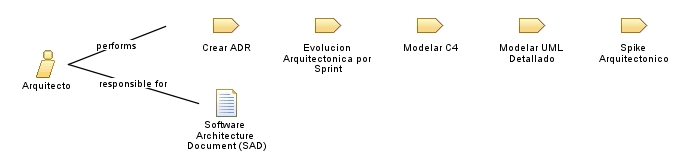

| Role: Arquitecto |
 |
|
Relationships
 |
||
| Primary Performs | ||
|---|---|---|
| Modifies |
|
|
| Process Usage | ||
Main Description
|
Facilita las decisiones de arquitectura, documenta ADRs y mantiene los diagramas C4 y UML actualizados. Trabaja en pareja con desarrolladores en historias con impacto estructural. |